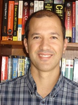

Nuno Leite
Dept. of Electronic and Telecommunications and Computer Engineering
ISEL, Polytechnic Institute of Lisbon
R. Conselheiro Emídio Navarro 1, 1959-007 Lisboa, PORTUGAL
nleite_at_cc.isel.ipl.pt
Short Biography
Lecturer at the Electronic and Telecommunications and Computer Engineering Department (ADEETC) of the Engineering High Institute of Lisbon (ISEL), Polytechnic Institute of Lisbon (IPL).
Researcher at LaSEEB (Evolutionary Systems and Biomedical Engineering Lab). Member of CCISEL (Centro de Cálculo - ISEL). Member of ACM - Association for Computing Machinery. Member of IEEE - Institute of Electrical and Electronics Engineers.
Ph.D. student in Electrical and Computer Engineering at IST, Technical University of Lisbon, since December 2010, under supervision of Profs. Fernando Melício and Agostinho Rosa.
Master in Electrical and Computer Engineering, Computer Science field, at IST in March 2008.
Graduated in Informatics and Computer Engineering (B.Sc. + Eng. degree) at ISEL in October 2002.